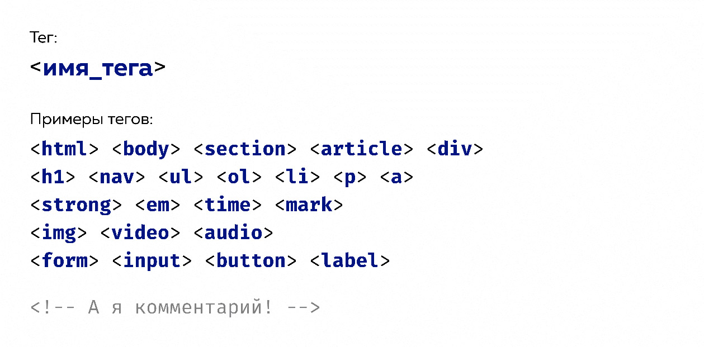
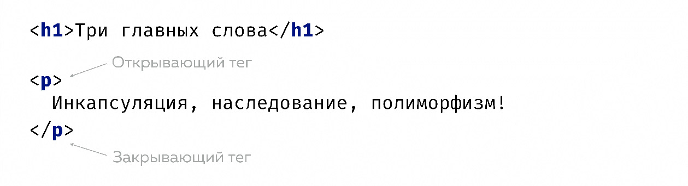
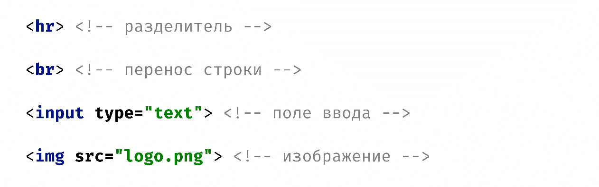
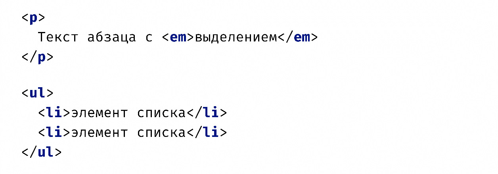
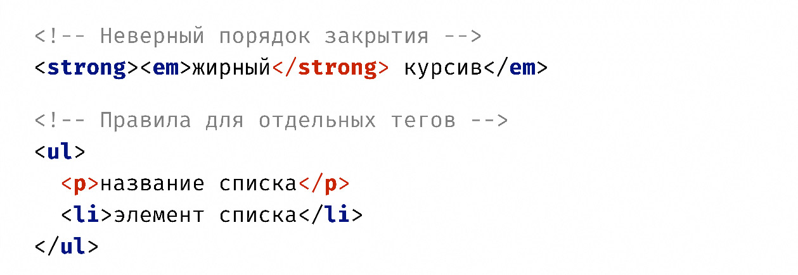
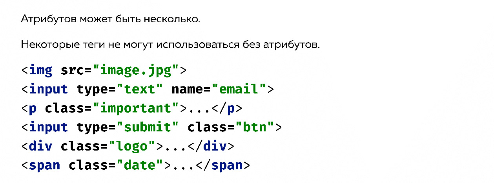
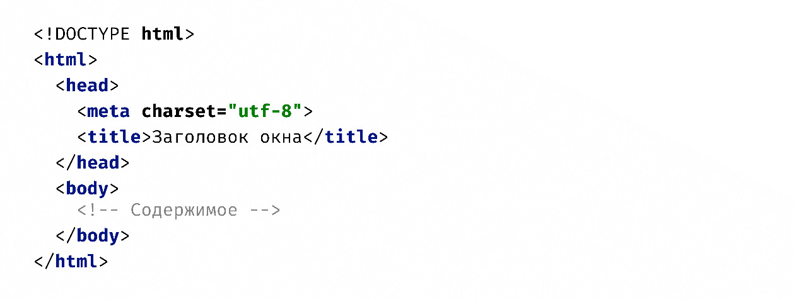
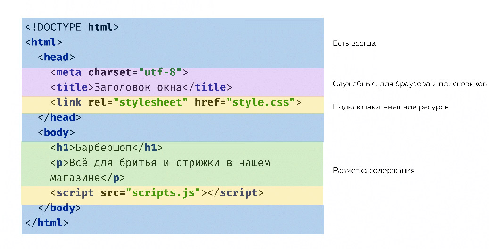

Глава 1.2. Введение в HTML
Что такое язык HTML? Зачем он нужен? Из чего он состоит? Давайте разбираться.
HTML — это язык разметки. Он описывает не логику или поведение элементов на странице, а сами элементы — содержание страницы. Весь контент, который есть на странице, описывается с помощью элементов языка HTML.
Теги
Каждый элемент языка HTML называется тегом. Теги — это такие кирпичики, из которых строится страница. Они состоят из двух знаков «больше» и «меньше», между которыми находится имя тега.
Давайте рассмотрим виды тегов: они бывают парные, а бывают одиночные.
Парные теги
Парные теги предназначены для того, чтобы внутри них что-то размещалось. Внутрь парных тегов обычно вкладывают либо текст, либо другие теги.
Одиночные теги
Одиночные теги являются независимыми и самоцельными сущностями, поэтому им не нужен контент внутри. Например, это может быть перенос строки или картинка.
Некоторые одиночные теги должны иметь дополнительные атрибуты, чтобы они имели смысл и работали. Самый простой пример — тег img, который обозначает изображение. У изображения должен быть адрес, чтобы браузер знал, откуда его скачать. Этот адрес хранится в соответствующем атрибуте тега.
Основная разница между одиночными и парными тегами в том, что у парных есть закрывающий тег, в котором перед именем тега ставится «обратный слеш». Раньше у одиночных тегов тоже ставился закрывающий слеш, сейчас это не требуется.
Правила вложенности
Теги можно вкладывать друг в друга, но при этом нужно соблюдать определённые правила. Самое главное и универсальное правило — теги должны закрываться верно, то есть в правильном порядке: вложенный внутрь тег должен закрываться раньше, чем внешний, родительский.
Есть и другие правила, которые касаются каких-то конкретных тегов. Например, есть тег ul, который обозначает неупорядоченный список. Внутри этого тега могут быть только теги li — элементы списка. А вот внутри тегов li могут быть другие теги.
С правилами вложенности вы познакомитесь позже, постепенно изучая теги в течение курса и проверяя свой HTML-код в специальном сервисе — валидаторе. О нём мы поговорим позже.
Атрибуты тегов
Атрибуты — это дополнительные свойства тегов. Атрибуты пишутся внутри тега — рядом с именем тега внутри символов «больше» и «меньше».
После имени атрибута обычно идёт его значение. Имя атрибута и значение разделяются знаком равно. Атрибуты, если их несколько, пишутся через пробел.
Атрибуты бывают обязательные и необязательные. Например, существует обязательный атрибут — src, который обозначает адрес картинки в теге. Самый популярный необязательный атрибут — class. Мы будем много использовать его.
Существуют атрибуты, которые не имеют значения. Они называются бинарными. Если такой атрибут есть у тега, это что-то означает, если нет атрибута — это тоже что-то означает. Например, атрибут disabled. Если он есть, то кнопка или поле ввода могут быть неактивны. И наоборот.
Простейшая страница
Теперь давайте посмотрим, как выглядит самая простая HTML-страница в самом минимальном варианте. Ниже вы видите код такой страницы. Давайте разберёмся, что в нём есть.
Самое первое, что вы видите, и самое первое, что ожидает прочитать браузер — это специальная конструкция (или даже инструкция), которая называется DOCTYPE или объявление типа документа. Прописывая DOCTYPE в начале документа, вы декларируете, на какой версии языка HTML вы пишете этот документ. И дальше, в зависимости от того, какая версия языка используется, браузер по-разному может отрисовывать и обрабатывать страницу. DOCTYPE пробел HTML означает последнюю версию, в нашем случае это HTML5 — мажорная версия. После определения типа документа идут те самые теги. Самый главный тег — html. В нём находятся все остальные HTML-элементы. В html есть две части, два тега: head и body. head — это условно «голова», а body — «тело». Зачем они нужны? В head размещается служебная информация, которая нужна для того, чтобы влиять на всю страницу. Эту информацию могут использовать браузеры, поисковики или другие сервисы. Например, браузер смотрит в head и видит какую-то кодировку. В зависимости от кодировки, указанной в теге head, он меняет отрисовку всей страницы. Если установить неправильную кодировку, то вместо русских символов вы увидите иероглифы. Ещё пример: в теге title пишется заголовок, который отрисовывается у вас на вкладке в браузере. Ещё в теге head можно подключать стили, которые влияют на отображение всего документа, скрипты, влияющие на поведение. Туда можно прописывать метаинформацию для поисковиков и так далее. То есть head — это хранилище для метаинформации. Всё, что находится внутри head, не может отрисовываться на самой странице. В body располагаются теги, которые могут отрисоваться на странице. То есть само содержимое. Тегов содержимого достаточно много и постепенно в течение курса вы с ними познакомитесь.
Страница сложнее
Посмотрите на более сложную страницу.
Давайте подробнее разберём теги внутри head. Их два типа. Первый тип — это так называемая метаинформация, которую могут использовать браузеры, поисковики, какие-то другие сервисы. Второй тип — это теги для подключения внешних ресурсов. Например, тег link. В частности, с помощью тега link мы подключаем стили. У него есть атрибут rel, который означает «отношение». То есть браузер интересуется: «Какое отношение этот ресурс (который вы с помощью link подключаете) имеет к этой странице?». И мы говорим: «Этот ресурс (который мы с помощью link подключаем) имеет такое отношение к этой странице, что это её стилевые файлы, товарищ Браузер». Он говорит: «Понятно, стили» — из атрибута href берёт адрес и скачивает этот стилевой файл, применяет стили и отрисовывает картинку сайта. Тут у вас может сразу возникнуть вопрос: так, стоп, совсем недавно вы рассказывали про тег img, у которого есть атрибут src, который тоже обозначает адрес для скачивания картинки. А сейчас появился какой-то тег link, у него есть атрибут href и это тоже адрес. Почему там src, а здесь href? Так вышло исторически. У разработчиков спецификации получилось так, что у разных тегов появились разные атрибуты для указания адресов. Для ссылок — href, для картинок — src.
Продолжить